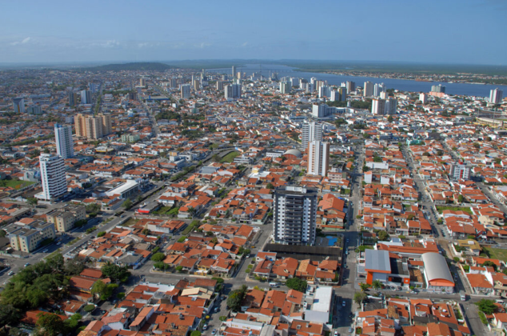
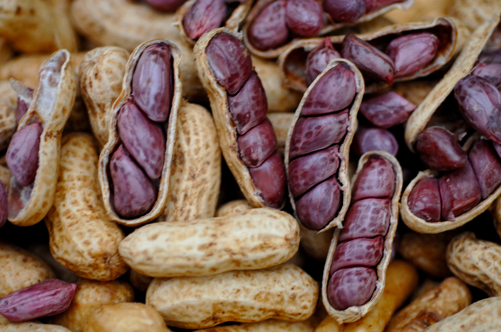
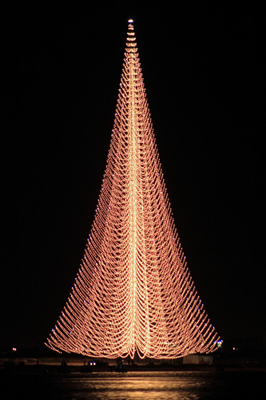

Aracaju é um município brasileiro, capital do estado de Sergipe. Localiza-se no leste do estado, sendo cortada por rios como o Sergipe e o Poxim. De acordo com a estimativa de 2021, sua população é de 672 614 habitantes. Somando-se as populações dos municípios que formam a Grande Aracaju, Barra dos Coqueiros, Nossa Senhora do Socorro e São Cristóvão, o número passa para 938 550 habitantes. Apesar de ser a menos populosa das capitais nordestinas, sua localização perfaz como importante ponto estratégico enquanto centro urbano, econômico, cultural e político para o país.
A história da cidade de Aracaju está relacionada à da cidade de São Cristóvão, a antiga capital da Capitania de Sergipe (atual estado de Sergipe). Foi a partir da decisão de mudança da cidade que abrigaria a capital provincial que Aracaju nasceu. Fundada em 1855, foi a segunda capital planejada de um estado brasileiro (a primeira foi Teresina, em 1852). Todas as suas ruas foram projetadas geometricamente, como um tabuleiro de xadrez, para desembocarem no rio Sergipe. Até então, as cidades adaptavam-se às respectivas condições topográficas naturais, estabelecendo uma irregularidade no panorama urbano, exceto as cidades reais fundadas no século XVI por exemplo (geralmente vilas sedes de protetorados privados a exemplo de Olinda), que eram planejadas de modo linear tendo como base uma cruz de acordo com mapas da época. O engenheiro Sebastião José Basílio Pirro contrapôs essa irregularidade e Aracaju foi, no Brasil, um dos primeiros exemplos de tal tendência geométrica.
Aracaju foi a primeira capital planejada do Brasil. As ruas são dispostas em uma projeção geométrica super organizada. Além do fato de tudo ser perto e acessível. O aeroporto, por exemplo, fica perto da Orla da Atalaia, que fica perto dos principais hotéis da cidade. É possível se hospedar em pontos estratégicos, que permitam se deslocar a pé aos principais pontos turísticos. Caso prefira alugar um carro, o trânsito também é um ponto positivo em Aracaju. se você conhece outras capitais, vai se impressionar com a tranquilidade que flui o trânsito na cidade.
O amendoim já era produzido em Sergipe. Era cozido em salmoura e mantido no próprio caldo. Na tentativa de conservar o alimento por mais tempo, um produtor decidiu adicionar limão ao cozimento. O resultado, como você pode imaginar, não foi o esperado e o produtor deixou o amendoim escorrendo em uma peneira para, em seguida, descartar o prejuízo.
Depois de experimentar o amendoim seco, concluiu que havia descoberto, por acaso, uma nova forma de cozinhar o alimento. Em 2013, amendoim verde cozido, passou a ser reconhecido oficialmente como patrimônio imaterial de Sergipe por meio da Lei 7.682/2013.
Aracaju entrou para o Guiness Book, em 2007, com a maior árvore de natal do mundo. Por mais de 20 anos, a árvore da Energisa foi montada no bairro Coroa do Meio. No ano em que entrou para o livro dos recordes, ela alcançou 110,11 metros de altura, o equivalente a um prédio de 40 andares.
